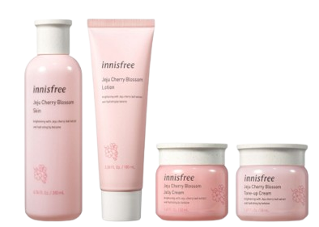

Step 1Share with us your current skin condition

Step 2Get your skin analysis results and a customised routine
Skin Concern :
Pimple Frequency :
Skin Sensitivity :
Your Skin Type:
Use the search bar and choose: